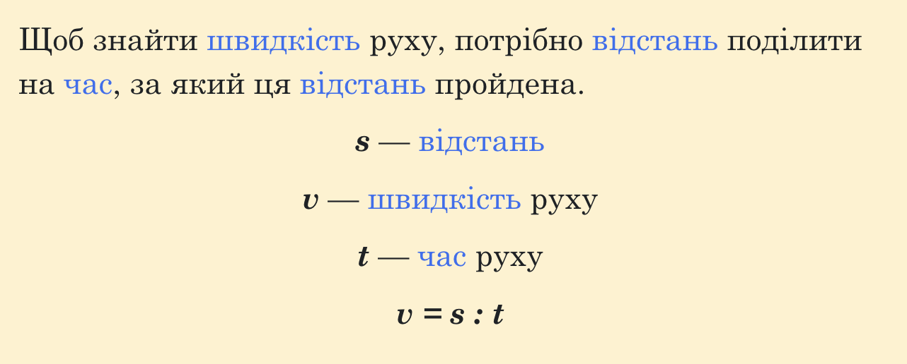

Тема 3. Додавання і віднімання багатоцифрових чисел
Урок 49. Швидкість, час, відстань
Сьогодні ми повправляємося у виконанні арифметичних дій з багатоцифровими числами, ознайомимося з поняттям швидкості руху та навчимося розв’язувати задачі, пов’язані з цією величиною.
Відео, сторінка 1
Для знаходження швидкості існує таке правило:

Запиши формулу та запам’ятай її, адже вона ще не один раз знадобиться тобі при розв’язуванні задач.
Відео, сторінка 2
Контрольні питання